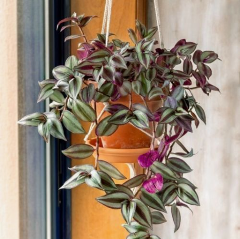

Cuidados para plantas de interior
Todas las plantas de interior tienen requisitos de riego ligeramente diferentes según cómo se cultiven y los cambios en su crecimiento a lo largo de las estaciones. Aun así, es mejor regar según sea necesario en lugar de seguir un calendario establecido. En general, las plantas que crecen en un suelo bien drenado en un recipiente de tamaño apropiado, deben regarse cuando la parte superior de unos 2 a 3 centímetros del sustrato se sienta seca. Los cactus y las suculentas necesitan menos agua; las plantas con flores suelen necesitar un poco más. El riego excesivo es una de las causas más comunes de muerte de las plantas de interior. Si no estás seguro de cuánto regar para mantener las plantas de interior sanas y fuertes, es mejor equivocarse por el lado seco que darles demasiada humedad.
